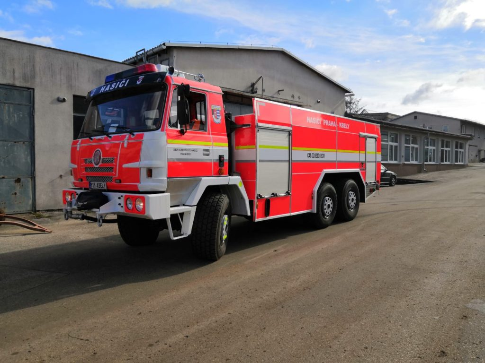

Profesionální hasiči
Profesionální hasiči v České republice mají k dispozici moderní techniku a vybavení, které jim pomáhá při plnění jejich úkolů. Mezi nejčastěji používanou technikou patří:
- Hasicí vozy - specializovaná vozidla vybavená hasicí technikou, včetně čerpadel a hadic
- Lešení a žebříky - slouží k přístupu k ohnisku požáru a záchranným akcím ve výškách
- Respirátory a ochranné obleky - chrání hasiče před nebezpečnými plyny, chemikáliemi a žárem
- Školicí a výcvikové zařízení - slouží k školení hasičů a simulaci různých záchranných situací
- Termokamery - umožňují hledání skrytých ohnisek požáru a identifikaci tepelných změn
Dobrovolní hasiči
Dobrovolní hasiči v České republice také disponují technikou, která jim usnadňuje jejich práci. Jejich výbava se však často liší podle jednotlivých sborů a dostupných prostředků. Mezi nejčastěji používanou technikou patří:
- Hasicí přístroje - malé přenosné zařízení s hasicí látkou, které je vhodné pro rychlý zásah při menších požárech
- Hasicí přívěsy - přívěsný vůz vybavený hasicí technikou a hadicemi
- Lešení a žebříky - slouží k přístupu k ohnisku požáru a záchranným akcím ve výškách
- Respirátory a ochranné obleky - chrání dobrovolné hasiče při zásazích s nebezpečnými látkami a žárem
